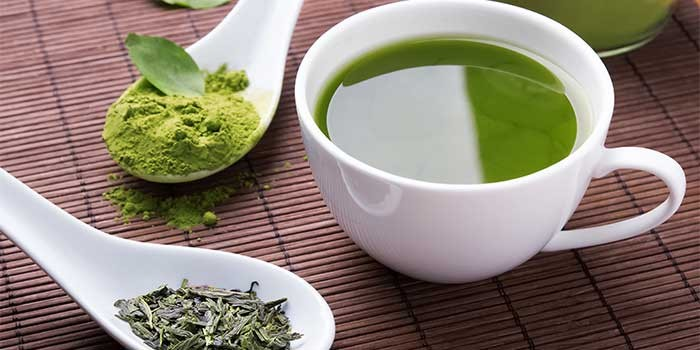
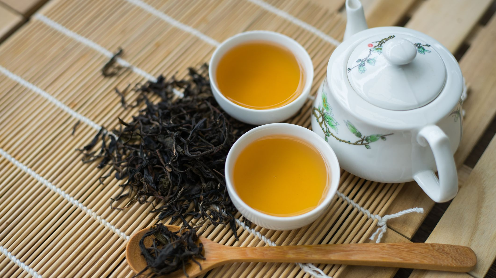
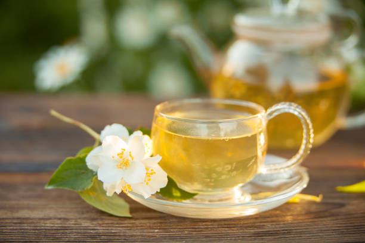
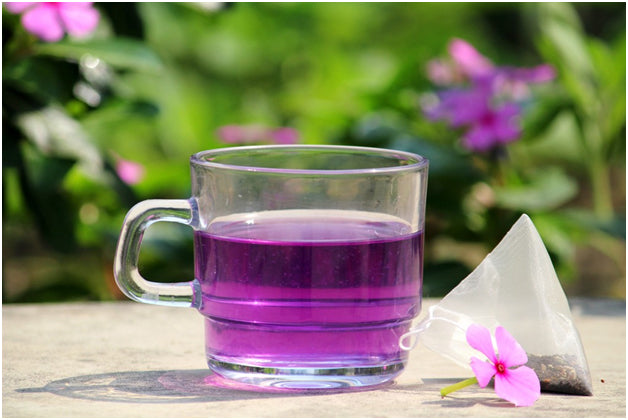

Green tea is another type of tea made from the camellia sinensis plant. Green teas often brew up a light green or yellow color, and tend to have a lighter body and milder taste. They contain about half as much caffeine as black tea (about a quarter that of a cup of coffee.) Popular green teas include Gunpowder, Jasmine Yin Cloud, and Moroccan Mint.
Benefits: Improved brain function,fat loss, protecting against cancer and lowering the risk of heart disease

Oolong tea (also known as wulong tea) is allowed to undergo partial oxidation. These teas have a caffeine content between that of green teas and black teas. The flavor of oolong (wulong) teas is typically not as robust as blacks or as subtle as greens, but has its own extremely fragrant and intriguing tones. Oolongs (wulongs) are often compared to the taste and aroma of fresh flowers or fresh fruit.
Benefits: Oolong tea could help reduce the risk of diabetes and it comes with a range of antioxidants..

Black tea is allowed to wither, which precedes a process called oxidation (sometimes incorrectly referred to as fermentation) during which water evaporates out of the leaf and the leaf absorbs more oxygen from the air. Black teas usually undergo full oxidation, and the results are the characteristic dark brown and black leaf, the typically more robust and pronounced flavors of black teas, and when brewed appropriately, a higher caffeine content compared to other teas (50-65% of coffee, depending on the type and brewing technique).
Benefits: Black tea could reduce the risk of stroke, regulate cholesterol and lower blood pressure.

White tea is a delicate, minimally processed tea that is highly sought after by connoisseurs and enjoyed by experts and novices alike. White tea has a light body and a mild flavor with a crisp, clean finish. White tea tends to be very low in caffeine, although some silver tip teas may be slightly higher in caffeine. Popular white teas include Bashan Silver Tip and White Peony.
Benefits: It's rich in antioxidants, may reduce the risk of heart disease, could help you lose weight,help protect your teeth from bacteria and has compounds that may fight cancer.

Purple tea is a relatively new kind of tea, and has only been commercially available for a few years. The tea is produced from a rare purple-leaved tea plant found growing wild in the Assam region of India. Today, purple teas are primarily produced in Kenya, Africa. They have a light body and mellow flavor, and are extremely low in caffeine and high in antioxidants and anthocyanins.
Benefits:Purple tea is helpful in improving and maintaining cardiovascular health by helping to relax and dilate blood vessels. Purple tea also helps by reducing cholesterol levels, which is crucial for boosting heart health.
